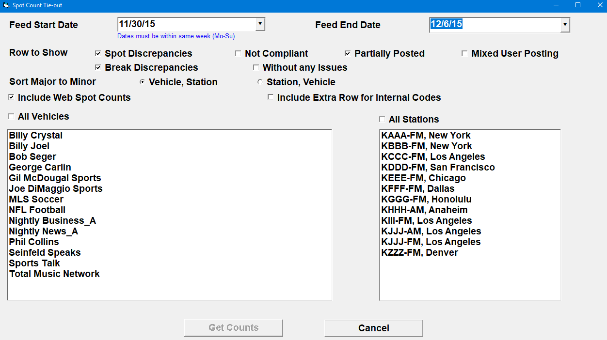
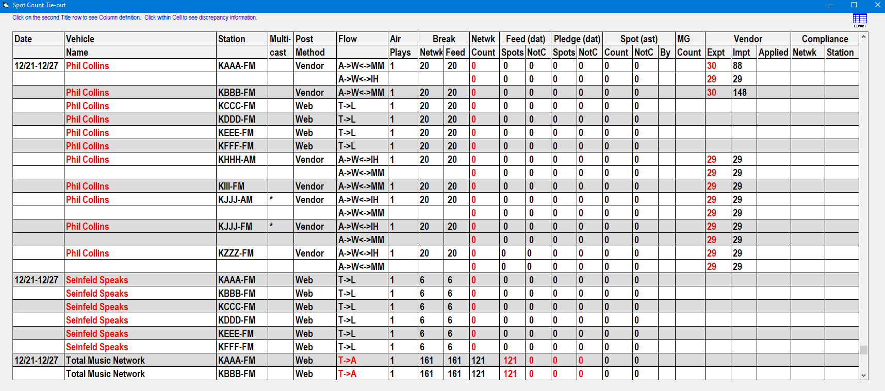
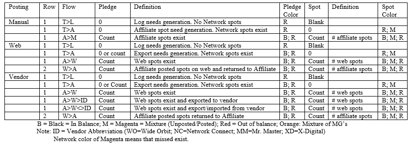

Spot Count Tie-out
The Spot Count Tie-Out utility is used to examine the current spot counts for a single week for troubleshooting purposes. Spot counts by network, feed, pledge, affiliate spot, web makegoods, vendor exports and imports, and network and station compliance counts, are all shown and can be analyzed.
Access the Spot Count Tie-Out utility from the Affiliate system -> File -> Utilities -> Spot Count Tie-Out menu option. A keycode is needed to access the utility.
Specification Screen
This section describes the various selectivity option that are available when running this utility.

Feed Start Date and Feed End Date: this utility can only be run for a single Monday through Sunday week. Use these fields to enter the feed start and end dates to use for gathering the data.
Row to Show: these checkboxes allow you to choose which fields to include in the results.
- Spot Discrepancies: any spot count discrepancies.
- Not Compliant: checking this on will show the network and station compliance counts.
- Partially Posted: if the affidavit is not fully posted, but has at least one posted spot, then it is considered partially posted.
- Mixed user posting: the affidavit was sent to the web, but the affidavit was posted on the affiliate system without waiting for it to be posted on the web.
- Break discrepancies: a discrepancy between the network break count and the feed break count.
- Without any issues: checking this on will include rows that have no issues. Uncheck it to exclude rows without issues.
Sort Major to Minor: the results can be sorted by vehicle and station or by station and vehicle.
Include web spot counts: when checked on, the web spot counts (“Spot (ast) Count”) will be included in the results.
Include extra row for internal codes: when checked on, an extra row is shown in the results for the agreement code, vehicle code, station code, and time zone.
Vehicles and Stations: select the vehicles and stations to have the utility check.
Get Counts: press the Get Counts button to run the utility.
Tie-out Results Screen
The results screen shows the results using the criteria that was selected. The results can be exported to a CSV file by pressing the export button in the upper right corner. Many of the fields show additional information when clicked on. Each field of the results screen is described below.

Date: Date range used.
Vehicle Name: displays the vehicle name. If it’s red, affiliate network log spots have not been generated, and the final Traffic log may need to be generated.
Station: the station call letters.
Multicast: an asterisk indicates it is part of a multicast group. Two asterisks mean it is the primary station. If it’s red, a primary station is not defined but is required for the vendor. This can be corrected by defining a primary station on the Stations screen Sister Station tab.
Post Method: the manner in which affiliate aired dates and times are posted, which can be manual (on the Affiliate Affidavit screen), on the CSI Electronic Affidavit website, or by Vendor.
Flow: indicates the flow of spots between the Affiliate system, the CSI Electronic Affidavit website, and Vendor Services.
- T: Traffic
- A: Affiliate
- W: Web
- WO: Wide Orbit
- NC: Network Connect
- MM: Mr. Master
Example: W->A means data sent from the web to the affiliate system.
Example: W<->WO means data transferred in both directions between the web and Wide Orbit.
For manually posted affidavits, “Rec’d” (“Received”) indicates that the affidavit has been posted as received.
When the flow is marked as red, click the field to view the cause and troubleshooting steps.

Air Plays: the number of times the station has agreed to air the spots. If it’s magenta, there are duplicate breaks defined with the same air play number on the agreement.
Break - Network: the number of breaks found from the Traffic spots transferred to the Affiliate system, or if no breaks were transferred, it is obtained from the vehicle program structure. If it’s red, the network and feed counts are not matching. Check the selling/airing links, time zone definition, unsold breaks, and program structure.
Break - Feed: the number of breaks defined on the agreement pledge tab, or if no pledges are defined, it is obtained from the vehicle program structure. If it’s red, the network and feed counts don’t match. Check the selling/airing links, the time zone definition, unsold breaks, and program structure.
Network Count: the count of traffic log spots transferred to the affiliate system. If it’s red, the affiliate network spots have not been generated. Fix by generating the Traffic log.
Feed (dat) - Spots: the number of feed spots are determined by applying the agreement pledge rules (excluding not carried pledges) to the network spots. If it’s red, the feed and pledge counts don’t match. Fix by generating the Traffic log. If log generation failed to solve the problem, check selling to airing links, time zone definition, unsold breaks, and program structure.
Feed (dat) - NotCarried: the number of not carried feed spots, determined by applying the agreement pledge rules for not carried pledges to the network spots. If it’s red, the feed and pledge counts don’t match. Fix by generating the Traffic log. If log generation failed to solve the problem, check selling to airing links, time zone definition, unsold breaks, and program structure.
Pledge (dat) - Spots: the number of affiliate spots generated by applying the agreement pledge rules (excluding not carried pledges). If it’s red, the feed and pledge spot counts are not matching, or the pledge and spot counts are not matching. Fix by generating the Traffic log. If log generation failed to solve the problem, check selling to airing links, time zone definition, unsold breaks, and program structure.
Pledge (dat) - NotCarried: the number of affiliate spots that are not carried as per the agreement pledge rules. If it’s red, the feed and pledge spot counts are not matching. Fix by generating the Traffic log. If log generation failed to solve the problem, check selling to airing links, time zone definition, unsold breaks, and program structure.
Spots (ast) - Count: the number of affiliate or web system spots (aired and missed). Whether it is the affiliate or web spots is determined by looking at the last destination – excluding the vendor – in the Flow section. For example, if the Flow shows W->A, then the Spot (ast) Count is the Affiliate system spot count (because the “A” for affiliate is the last destination). If it’s red, the pledge and spot counts are not matching. Fix by generating the traffic log and/or exporting to the web. If log generation failed to fix the problem, check the selling/airing links, time zone definition, unsold breaks, and program structure.
Spots (ast) - NotCarried: the number of not carried affiliate system spots. If it’s red, the pledge and spot counts are not matching. Fix by generating the traffic log and/or exporting to the web. If log generation failed to fix the problem, check the selling/airing links, time zone definition, unsold breaks, and program structure.
Spots (ast) - By: the source of the system that posted the affiliate spot dates and times. A = Affiliate system; W = Web system; V = Vendor. If it’s red, spots are manually posted within the Affiliate system but posting is not completed on the web (mixed user posting). Fix by completing the posting process on the web.
MG Count: the number of affiliate spots defined as makegoods within the specified date range.
Vendor - Export: the number of web spots sent to the vendor. If it’s red, not all web spots have been exported to the vendor. Fix by re-exporting affiliate spots to the web.
Vendor - Import: the number of vendor spots returned to the web.
Vendor - Applied: the number of returned vendor spots that were in sync with the web spots.
Compliance - Network: the number of affiliate spots that are marked as Network Compliant. It’s red if not all spots are Network Compliant.
Compliance - Station: the number of affiliate spots that are marked as Station Compliant. It’s red if not all spots are Station Compliant.